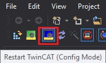

This chapter details some common issues that can cause the user trouble when using TwinCAT or the examples.
Problem: "Example won't import into Code Composer Studio (CCS)" Solutions:
- Verify that you have the latest C2000 Device Support Package installed within CCS. In CCS go Help -> Check for Updates.
- Verify that you have the minimum required compiler versions installed for both C2000 and ARM. In CCS go Help -> Install Code Generation Compiler Tools.
- If you've previously imported an example into CCS, deleted it, and can't import it again, verify that the example is completely deleted from the CCS workspace (not just the CCS Project Explorer).
Problem: "EtherCAT network fails to initialize when running TwinCAT" (This can include: "Reload Devices" fails, "Scan" for devices fails, "Restart EtherCAT in config mode" fails) Solutions:
- Power-cycle the controlCARD
- Confirm that the EtherCAT example is loaded and running
- Verify that a realtime Ethernet adapter is installed
- In Visual Studio, select the TwinCAT menu from the main toolbar and select Show Realtime Ethernet Compatible Devices
- In the popup window, under Installed and ready to use devices(realtime capable) category, if no connections are shown, select one from the list of Compatible devices and click Install.
Problem: "Example is getting stuck when attempting to enable ESCSS debug access" Solutions:
- Power-cycle the controlCARD. This problem will occur when previously running EtherCAT from one core and then trying to run EtherCAT from another core without power-cycle.
Problem: "The EEPROM and SubordinateDevice stack examples are loaded but device won't go to OP mode" Solutions:
- Restart TwinCAT in config mode

/TwinCAT Restart in Config Mode Button
- Power-cycle the controlCARD, restart TwinCAT, and re-scan
 1.9.1
1.9.1